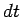
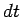

Next: Derivative Up: Control Theory 101 Previous: Proportional
Unfortunately life is often more complicated than we'd like, and even in the case of a simple wing leveler, you encounter situations where the aircraft isn't perfectly trim and zero aileron deflection does not always equal zero roll motion. In an aircraft such as a Cessna 172, the amount of aileron deflection needed to keep the wing level can vary with speed. In these cases, a proportional only controller will stabilize out quickly, but will stabilize to the wrong value. We need a way to drive the error in the proportional only controller to zero.
Enter the Integral component of the PID algorithm. Remember back to your calculus days, integral refers to the area under a curve. If you have a function, the integral of that function produces a second function which tells you the area under curve of the first function.
Fortunately we usually don't have a formula for the first function since it changes depending on external conditions (i.e. current speed in a car.) That means we can't integrate this function directly and we are spared all the potentially messy calculus.
So we use an alternative approach to approximate the error under the
process value curve. At each time step we know  which is the
difference between the process value and the reference point. If we
multiply this distance times  (the time step) we get an area which
approximates the error under the curve just for this time step. If we
add these areas up over time, we get a very reasonable approximation
of the area under the curve.
which is the
difference between the process value and the reference point. If we
multiply this distance times  (the time step) we get an area which
approximates the error under the curve just for this time step. If we
add these areas up over time, we get a very reasonable approximation
of the area under the curve.
Essentially what this does is that the longer time passes with us not
at our target value, the larger the sum of the (error  dt)'s becomes
over time. If we use this sum to push our output value (i.e. our
accelerator position) then the longer we don't quite hit our target
speed, the further the system pushes the accelerator pedal. Over
time, the integral component compensates for the error in the
proportional component and the system stabilizes out at the desired
speed.
dt)'s becomes
over time. If we use this sum to push our output value (i.e. our
accelerator position) then the longer we don't quite hit our target
speed, the further the system pushes the accelerator pedal. Over
time, the integral component compensates for the error in the
proportional component and the system stabilizes out at the desired
speed.
Curtis L. Olson 2004-02-01